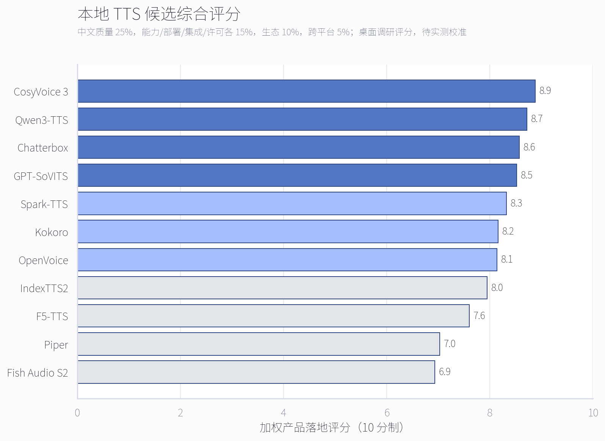
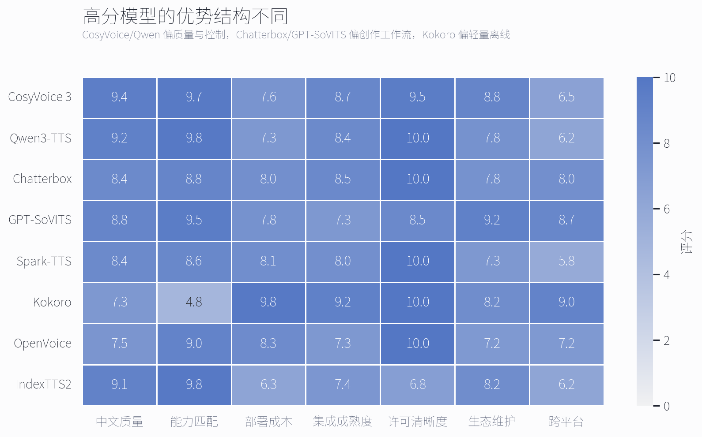

声笺本地 TTS 选型评估
Executive Summary
- 首选质量引擎：CosyVoice 3 0.5B。它在中文、方言、零样本克隆、发音修正和双向流式方面最贴合声笺，官方模型与代码采用 Apache-2.0，适合作为第一条 NVIDIA GPU 本地链路。
- 第二质量引擎：Qwen3-TTS。0.6B 适合较低资源部署，1.7B 提供更强的语音设计、指令控制和克隆能力；它应作为与 CosyVoice 并行验证的第二候选，而不是一开始同时产品化全部变体。
- 轻量离线引擎：Kokoro 82M；宽松许可克隆备选：Chatterbox 中文 V3。Kokoro 适合无独显设备和固定音色，Chatterbox 则兼顾 MIT、中文专模、CUDA/CPU/MPS 与零样本克隆。
- 不要把大模型直接塞进当前 PyInstaller 单文件。现有代码把网络检查、Edge 音色、MP3 临时文件和生成函数绑在一起；本地模型应作为独立常驻 sidecar，通过统一 Provider 协议接入，Edge TTS 保留为在线回退。
优先做“双档本地模式”，而不是押注单一模型
质量档建议先验证 CosyVoice 3，并用 Qwen3-TTS 做对照；轻量档建议用 Kokoro 验证真正离线、无独显、低安装成本的用户路径。Chatterbox 中文 V3 和 GPT-SoVITS 更适合后续“自定义音色/创作者工作流”。

P0 · CosyVoice 3中文和方言覆盖强、0.5B、支持发音修正与约 150 ms 官方流式延迟主张；适合本产品的第一条高质量本地链路。
P0 · Kokoro 82MApache-2.0、CPU 友好、支持普通话管线；能力较窄，但最适合先打通离线安装、模型下载和 Provider 抽象。
P1 · Qwen3-TTSApache-2.0，0.6B/1.7B 梯度清晰，支持十种语言、克隆、语音设计和流式；新项目，需重点测稳定性与实际 RTF。
P1 · Chatterbox 中文 V3MIT、0.5B、中文单语专模和克隆，设备选择更宽；适合作为跨平台、商业许可清晰的高级音色后端。
关键官方资料： CosyVoice 3、 Qwen3-TTS、 Chatterbox 中文 V3、 Kokoro。
评分结构解释了“试听最好”不等于“最适合首发”
CosyVoice 3 和 Qwen3-TTS 在中文质量与控制能力上领先；GPT-SoVITS 和 Chatterbox 更适合用户自定义音色；Kokoro 的优势集中在部署、集成、许可和跨平台。IndexTTS2 的时长控制很适合配音，但自定义许可和更高资源档位需要单独评审。

完整评分表
25%中文质量与稳定性
15%能力匹配
15%本地部署成本
15%集成与服务成熟度
15%许可与商业清晰度
10%生态与维护
5%跨平台与离线打包
“能力/音质”是中文质量 60% 与能力匹配 40% 的辅助读数；“综合分”才用于本产品排序。
| 排名 | 模型/变体 | 综合分 | 能力/音质 | 规划硬件档 | 许可判断 | 建议角色 |
|---|---|---|---|---|---|---|
| 1 | CosyVoice 3Fun-CosyVoice3-0.5B-2512 | 8.9 | 9.5 | 8-12 GB 显存舒适档 | 模型卡与仓库为 Apache-2.0；仍需审计随附第三方组件 | 首个高质量 Provider POC |
| 2 | Qwen3-TTS12Hz 0.6B and 1.7B | 8.7 | 9.4 | 0.6B 规划 8-12 GB；1.7B 规划 12-24 GB | Apache-2.0 | 第二质量引擎及语音设计路线 |
| 3 | ChatterboxMultilingual V3 zh-CMN 0.5B | 8.6 | 8.6 | 8-12 GB 显存；CPU/MPS 可运行但更慢 | MIT | 宽松许可的跨平台克隆首选备选 |
| 4 | GPT-SoVITSv2 ProPlus | 8.5 | 9.1 | 8-12 GB 显存；支持 CPU 与 Apple Silicon | 仓库 MIT；所有下载的第三方检查点需逐项审计 | 创作者工作流与定制音色强项 |
| 5 | Spark-TTS0.5B | 8.3 | 8.5 | 8-12 GB 显存 | Apache-2.0 | NVIDIA 平台的中英双语备选 |
| 6 | Kokoro82M Mandarin pipeline | 8.2 | 6.3 | CPU 友好并支持 Apple Silicon | 代码与权重 Apache-2.0 | 轻量离线固定音色首选 |
| 7 | OpenVoiceV2 | 8.1 | 8.1 | 消费级 GPU；CPU 可运行但吞吐较低 | MIT | 轻量语音克隆适配器 |
| 8 | IndexTTS21.5B | 8.0 | 9.4 | 12-24 GB 显存舒适档 | bilibili 自定义模型协议；含规模阈值与使用限制 | 法务评审后的高级配音与时长控制选项 |
| 9 | F5-TTSF5-TTS v1.1.x | 7.6 | 8.7 | 8-16 GB 显存；有社区 MLX/ONNX 移植 | 代码 MIT；官方预训练权重为 CC-BY-NC | 仅作研究基准或替换为可商用权重 |
| 10 | Piperpiper1-gpl v1.4.x | 7.0 | 5.1 | CPU 与嵌入式友好 | 引擎 GPL-3.0；各音色模型另有许可证 | 仅用于 GPL 兼容的轻量发行路线 |
| 11 | Fish Audio S2S2 Pro 4B/5B | 6.9 | 10.0 | 建议 24 GB+ 显存；官方性能展示使用 H200 | Fish Audio Research License；商业用途需另行授权 | 质量上限与实验室基准，不作为默认后端 |
现有代码的四个接入阻点
- 生成逻辑没有 Provider 边界。
process_text_job直接调用generate_speech_with_retries，后者再直接调用 Edge TTS。新增模型前应先抽象list_voices、synthesize、health和capabilities。 - 本地模式会被网络检查挡住。试听和转换入口都在建任务前检查 Edge 网络；检查必须下沉到具体 Provider。
- 参数与音色命名空间属于 Edge。当前任务只存
voice/speech_rate/volume/pitch，需要增加provider/model/version/language/instruction/reference_audio，并按 capability 决定哪些控件可用。 - 音频管线固定为 MP3 字节拼接。多数本地模型输出 WAV。应先统一成 PCM/WAV 分段，做真正的音频拼接，再一次性编码 MP3；否则跨模型长文本会出现容器或时间戳问题。
部署建议：保留当前 Flask 主程序和任务系统；每个本地引擎运行在独立常驻进程或容器，通过 localhost HTTP/Unix socket 通信。模型权重按需下载，不进入主 PyInstaller 包。
推荐实施顺序
- 先做 Provider 协议和音频标准化。实现 Edge 适配器保持现有行为，再加一个 mock/local adapter，确保任务、重试、历史和批量接口不感知具体引擎。
- 两周内完成两个 POC。质量 POC 用 CosyVoice 3 0.5B；轻量 POC 用 Kokoro 82M。两者均以 sidecar 形式实现
/health、/voices、/synthesize。 - 用同一套中文语料横评 Qwen3-TTS 与 Chatterbox。只有在相对 Cosy/Kokoro 明显改善某一用户场景时，才进入正式 Provider 列表。
- 把克隆音色作为受控高级功能。上传参考音频前增加授权确认、来源记录、保留期、删除能力和滥用提示；不要在第一版本默认开放。
实测需要回答的关键问题
- 目标用户中，无独显、Apple Silicon、8 GB/12 GB NVIDIA、24 GB NVIDIA 的占比分别是多少？
- 普通话、粤语、方言、小说长文本、短视频口播和克隆音色，哪一类是下一阶段主场景？
- 是否允许单独下载 1-10 GB 模型包，以及是否接受首次启动数分钟的安装和编译准备？
- 商业发行是否需要完全宽松许可，还是可以接受 GPL 独立进程或商业模型授权？
限制与假设
本报告是桌面调研，不是最终听感结论。各项目公开基准的数据集、参考音频和推理配置不同，不能直接横向等价。下一步必须在目标硬件上测首音延迟、RTF、峰值显存/内存、长文本失败率、中文 CER、主观 MOS 和克隆相似度。
许可评分不是法律意见。Fish Audio S2 明确要求商业用途另行授权；F5 官方预训练权重为非商业许可；Piper 引擎为 GPL-3.0 且音色另有许可证；IndexTTS2 使用自定义模型协议。正式发行前需要逐项法务确认。